Rendered from docs/uml/*.puml and captured from the running
system with tools/termshot.py. Regenerate with make docs.
uml/01-class.puml
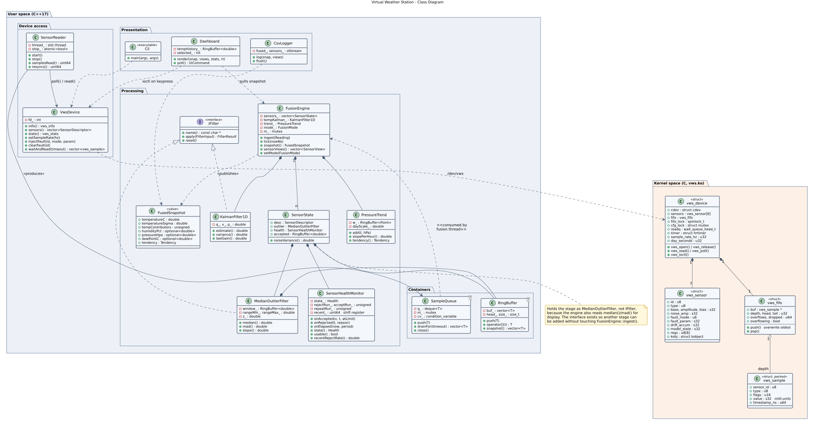
uml/02-sequence-datapath.puml
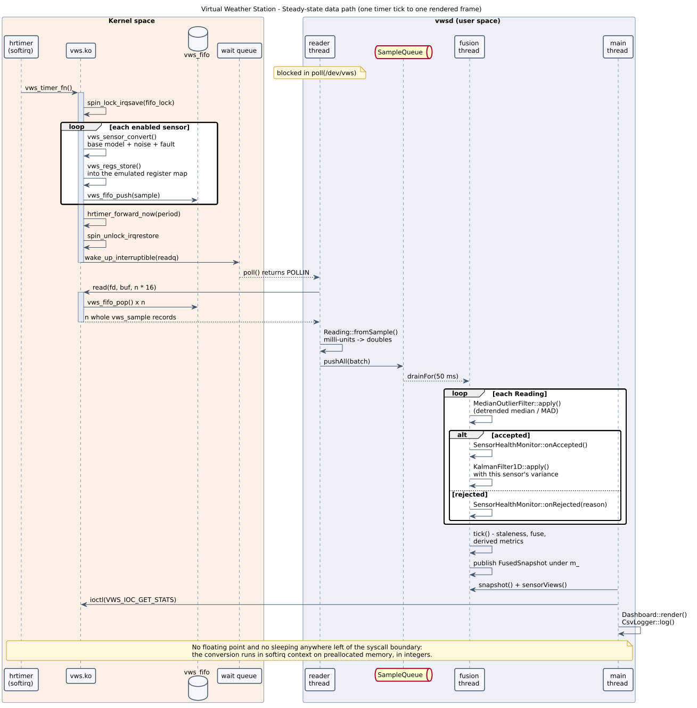
uml/03-sequence-fault.puml
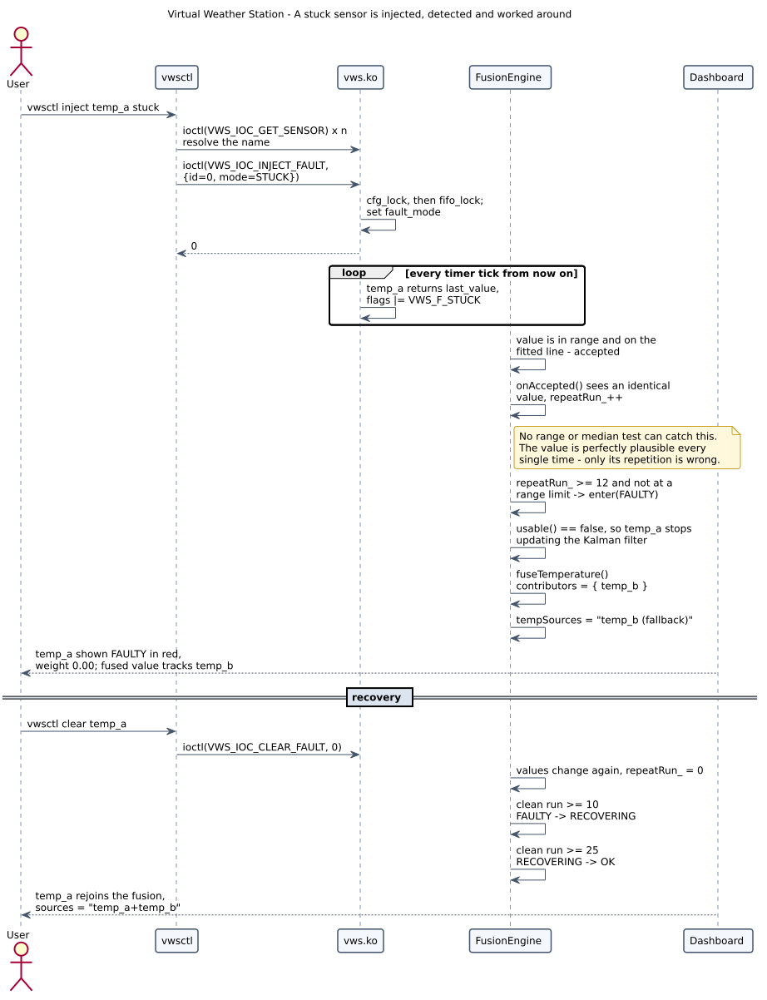
uml/04-state-health.puml
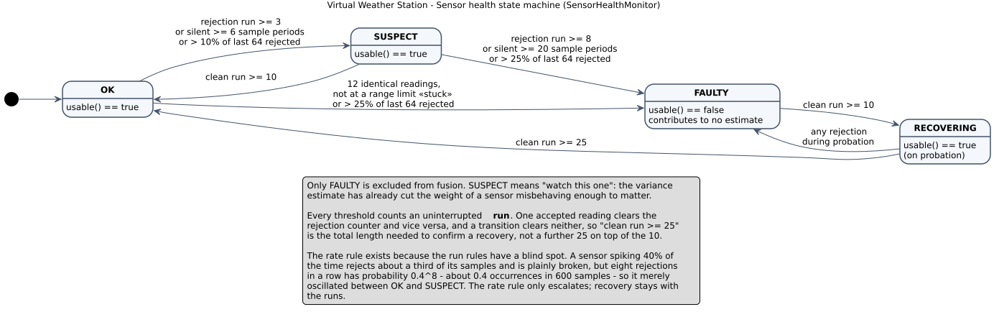
uml/05-state-driver.puml
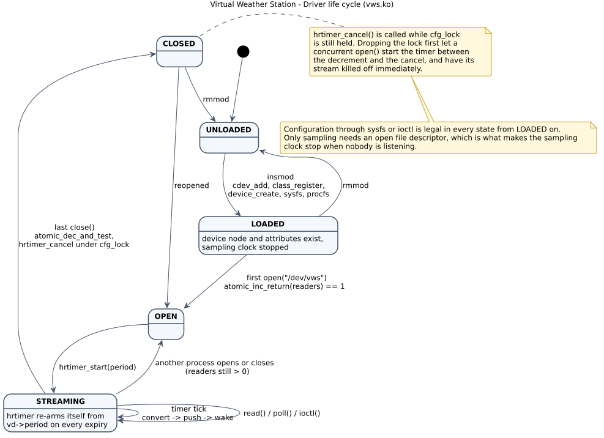
uml/06-component.puml
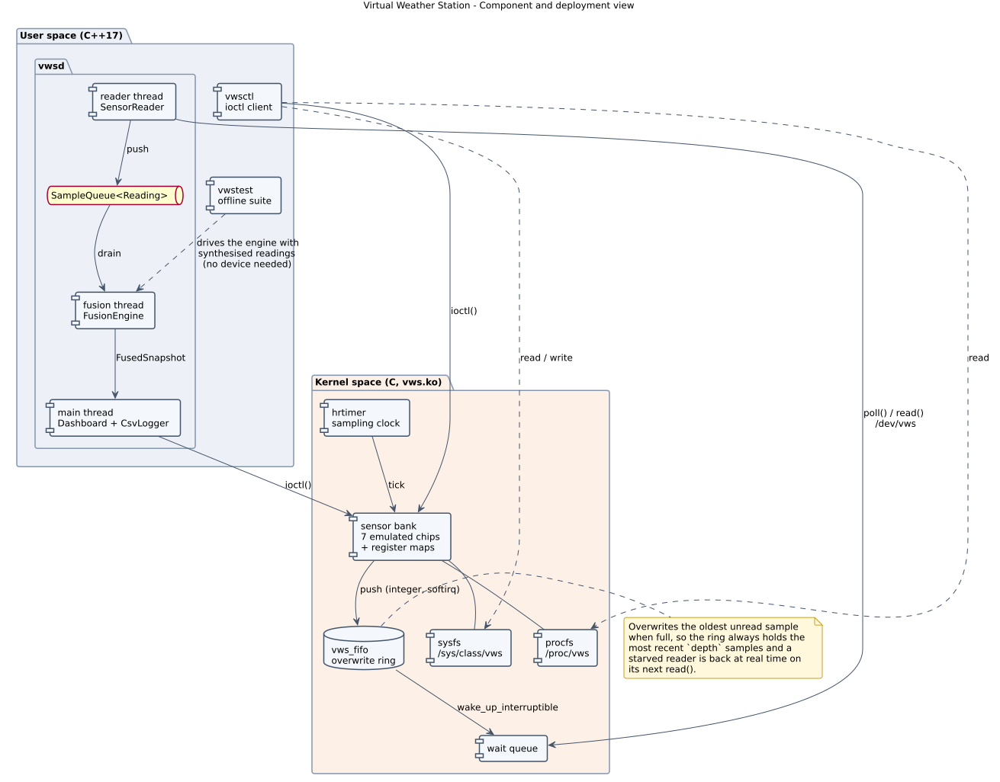
docs/screenshots/*.svg
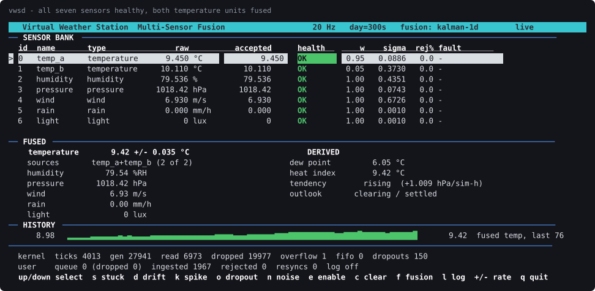
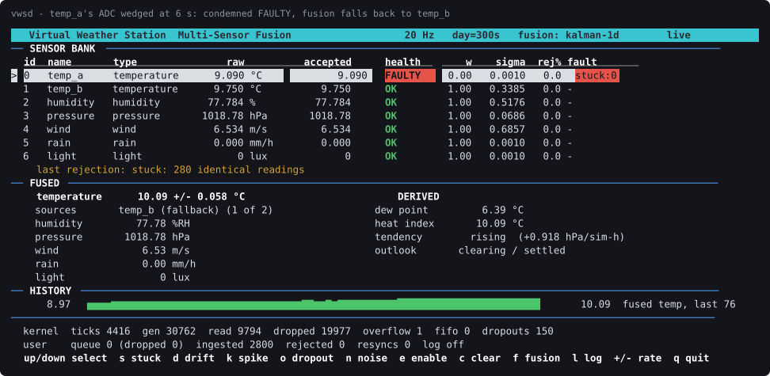
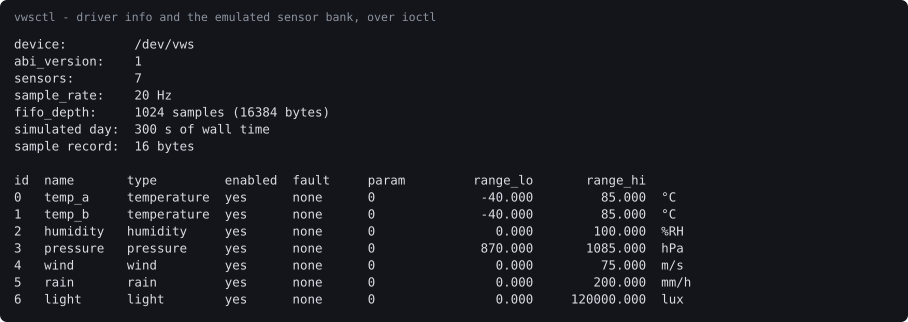
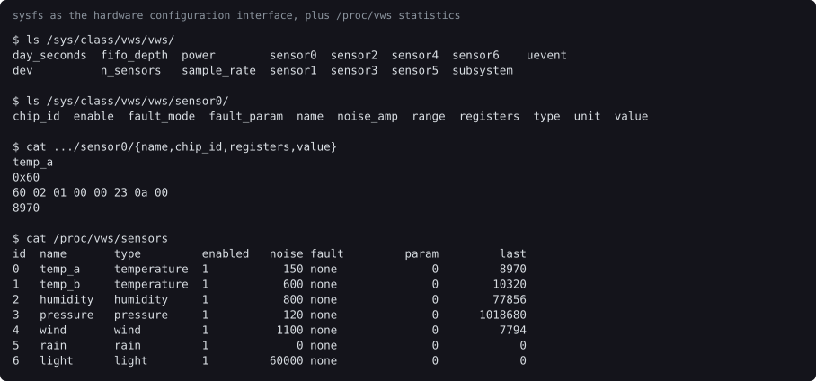
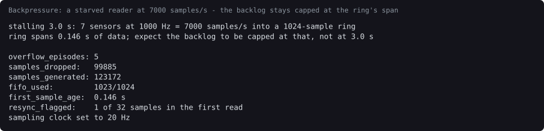
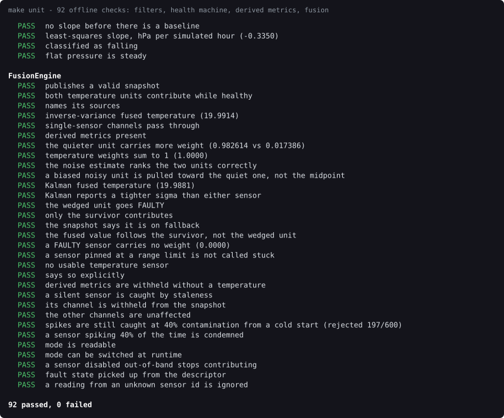